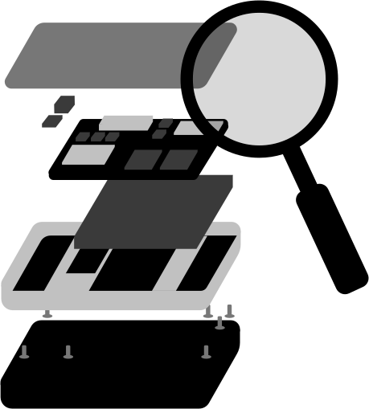

Un produit peut être amélioré de nombreuses façons : utiliser moins de matière, choisir un matériau différent, limiter les consommations d’énergie, faciliter les réparations ou encore repenser la manière de le partager.
La roue de Brezet permet de structurer ces pistes d’action et de repérer les solutions possibles aux différentes étapes du cycle de vie.
Dans cette activité, tu vas d’abord identifier les éco-solutions adaptées à plusieurs situations, puis les associer à la bonne catégorie de la roue.
Pour chaque question, sélectionne toutes les réponses pertinentes. Puis réalise le glisser-déposer pour associer chaque solution à la stratégie d’éco-conception correspondante.

Une entreprise souhaite améliorer la réparabilité d'un smartphone. Parmi les propositions suivantes, lesquelles sont pertinentes ?
Faciliter l'accès aux composants, leur remplacement et le recours à des outils standards permet de faciliter la réparation. Les assemblages permanents ou difficiles à démonter vont au contraire compliquer cette opération.
Une entreprise souhaite réduire les impacts liés au transport et à la logistique de son produit. Quelles solutions peut-elle envisager ?
Le Design for Logistics cherche notamment à réduire les volumes et masses transportés et à optimiser la logistique. Le choix du mode de transport peut également contribuer à réduire les impacts.
Une entreprise souhaite faciliter le recyclage de son produit en fin de vie. Quelles solutions de conception sont pertinentes ?
Faciliter le recyclage passe notamment par le choix de matériaux recyclables, la limitation de leur diversité et la possibilité de séparer les différents matériaux en fin de vie.
Une entreprise souhaite réduire les impacts environnementaux de son produit pendant la phase d’utilisation. Choisis parmi les solutions suivantes, les plus pertinentes ?
Le Design for Use vise notamment à réduire les impacts liés à l’utilisation du produit. Cela peut passer par une réduction de la consommation d’énergie, l’optimisation des performances en usage, mais aussi par la facilitation de l’entretien et l’augmentation de la durée de vie. Les solutions concernant spécifiquement l’emballage et le transport relèvent plutôt du Design for Logistics.
Une entreprise souhaite réduire l’impact environnemental de ses baskets. Quelles solutions peut-elle envisager ?
Une matière recyclée n’est pas automatiquement la meilleure solution dans tous les cas. Il faut aussi considérer ses propriétés, son procédé de production et les impacts associés. Alléger le produit peut être intéressant, mais pas si cela réduit fortement sa durée de vie.
Une usine fabrique des meubles. Quelles actions relèvent de l’optimisation de la production ?
Ces actions améliorent l’efficacité du procédé de fabrication. La location relève plutôt d’une réflexion sur le modèle économique.

Un fabricant d’ordinateurs veut réduire les impacts liés à la durée de vie de ses produits. Quelles solutions peut-il mettre en place ?
Réparer et conserver plus longtemps un appareil peut éviter la fabrication prématurée d’un produit neuf. La robustesse doit toutefois être adaptée aux besoins et ne pas conduire à surdimensionner inutilement le produit.

Une marque expédie ses produits dans des cartons volumineux contenant beaucoup de vide. Quelles éco-solutions peut-elle envisager ?
Réduire le volume transporté et mieux utiliser la capacité des véhicules peut diminuer les impacts logistiques. Un emballage réutilisable est intéressant si sa durée d’utilisation, son retour et son nettoyage sont cohérents avec le système étudié.
Un fabricant conçoit une lampe pour faciliter son recyclage. Quelles décisions peuvent l’aider ?
Un produit conçu pour être recyclable n’est pas nécessairement recyclé en pratique. Il faut également considérer la collecte, les procédés de traitement et les débouchés des matières récupérées.

Clique sur « voir la correction » sous chaque question pour découvrir les réponses !
La roue de Brezet est un outil pour explorer et organiser les pistes d’éco-conception : choisir les matériaux, réduire la quantité de matière, optimiser la production et la distribution, améliorer l’usage ou encore préparer la fin de vie. Elle aide à ne pas oublier de leviers, mais elle ne dit pas à elle seule quelle solution est la meilleure. Pour choisir entre plusieurs options, il faut tenir compte des besoins du produit et évaluer leurs effets sur l’ensemble du cycle de vie.
Passons maintenant aux outils qui permettent de guider ces choix et de comparer les solutions !